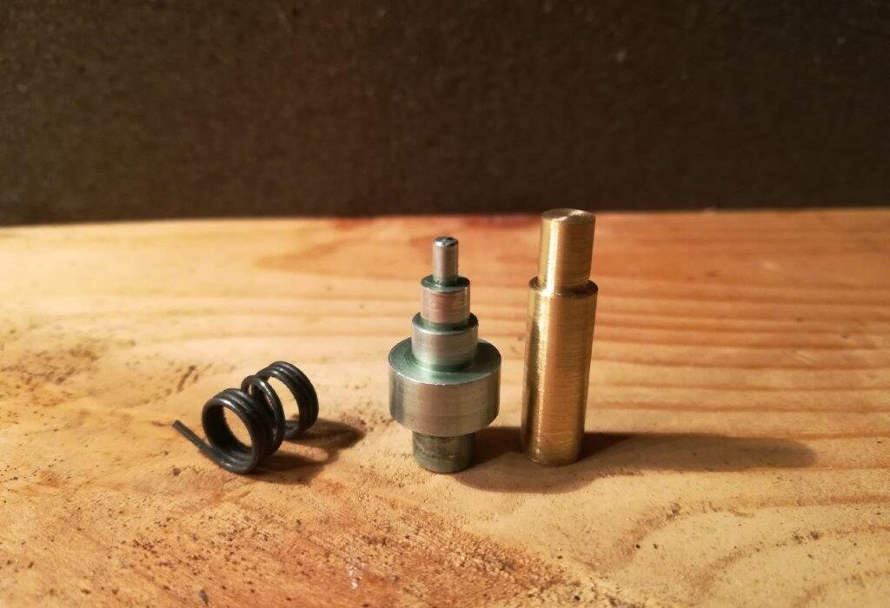

Having “finished” my custom build based on the Magnavox Micromatic – it will never really be finished – I have been listening to it quite critically. I’ve done some A/B comparisons between my “Micromanual” (which is what I’m calling it) and my U-Turn Orbit, which was my first serious turntable. I happen to have two copies of Bauhaus’s 40th anniversary “Bela session” so I started one on my newly finished turntable and one on my Orbit. Having two phono inputs on my Apt-Holman preamp makes switching between the two easy.
They sounded different, of course. The cartridge, being very different, probably accounted for much of that, but I noticed also that the U-turn sounded a hair faster. While the AT-XP5 cartridge on my Micromanual seemed to have better clarity throughout the spectrum, it didn’t sound quite as lively.
On a hunch I checked both turntables with a strobe. The Orbit was nearly dead-on 45rpm (this is a 45rpm 12″ disc) but the lines were crawling slowly backwards under the strobe on my Micromanual. Damn – it’s slow.
If anything, I was expecting the old changer to run fast. I have read many times that old turntables were designed to run slightly fast to account for wear and the motor slowing down over time. Also because we tend to perceive slightly fast music as lively and slightly slow as drab. My grandmother did not use this turntable extensively; I can tell, because there is very little wear to the motor spindle or other parts. Additionally, because the motor used to turn more than just the platter, I expected the reduced load would result in an increase in speed.
As I mentioned in my post on the motor, the speed of the platter is directly related to the speed of the motor. The 4-pole motor will turn at 1800rpm. Accounting for 5% slip, that’s 1710rpm. The stepped motor spindle is sized such that the ratio to the 9.375″ platter turns it at the right speed for each type of record. I was anticipating having to sand down the stepped motor spindle to hit my target speed, which is easily accomplished. Speeding the turntable up is quite a bit more challenging. To make the platter spin faster, you can do any of three things: make the motor spin faster; make the platter inner diameter smaller; make the motor spindle bigger.
Making the platter smaller is probably the most challenging to do well. it really needs to be perfectly concentric to avoid wow. I contemplated adding a coating to the inside of the platter, perhaps having it thickly powder coated, but that is a risky proposition. To do it right, material should be added, then turned down on a lathe.
Making the motor turn faster is totally possible. To do this correctly, one needs a variable frequency supply. Since the speed of this type of AC motor is dependent on the frequency of the power supply, one can vary the speed by changing the frequency. In the US, our grid runs at 60hz, which is what makes the 4-pole motor spin at a nominal 1800rpm (motor speed is calculated by 120*Frequency/Poles). Since I estimated I was running 2-3% slow, I only needed to speed up the motor by increasing the frequency 1 or 2 cycles per second to get to the right speed.
While voltage is easy to change, frequency is not. Most turntables now use a DC motor, on which the speed can be changed with a variable resistor. However, because so many people still use old AC motor turntables, there are some variable frequency supplies out there. They all, however, cost several hundred to thousands of dollars. I am seriously considering building my own variable frequency supply, but even building one is an expensive proposition. You’ve got to have a circuit which can produce a stable sine wave, with variable frequency, then a power amplifier, and finally a step-up transformer to hit 120v (because there’s no way you’re doing the previous steps at 120V). None of these things are exactly cheap, even to build from scratch.
The third option, and probably the cheapest, is to change the size of the motor spindle, or pulley. Since household (“mains”) power in many countries runs at 50hz, unlike our 60 cycles per second, turntable manufacturers using AC motors usually account for this with different sized pulleys or spindles. Back when the Micromatic changers were new, Collaro/Magnavox supplied different spindles – or sleeves to glue over the spindle – to change speeds, even having several different sizes to allow for individual motor speed variation.
If the motor spindle step for 33-1/3rpm is 2% slow at its original 0.183″, I reasoned that I would want to calculate for 2% fast to hit my target speed. By the original calculations a spindle of 0.190″ would be 2% fast. As I noted previously, 3/16″ (0.1875″) is pretty darn close and should get me most of the way there. I set out to make a new spindle.
In designing a new spindle, I decided I did not need a 78rpm or 16rpm step. I own neither and have no plans to. That leaves me with the 45rpm step and 33-1/3rpm. Since the motor shaft itself is 3/16″, and that is my target size for hitting 33-1/3rpm, I have contemplated simply using the shaft for a single speed machine, however, I think that the hardened and polished motor shaft is probably too slick for good purchase. I’ll need a separate 3/16″ rod.
Long story short, I bought, fairly cheaply, a brass tube 1/4” outside and 3/16” inside. This fit tightly over the shaft and required some sanding inside for a perfect fit. Since the spindle step for 45rpm measures 0.247″, 0.25″ is about perfect for a slight increase in speed, which means that with very little work – cutting a piece of tubing, really – I could have a 45rpm drive spindle which is about on target for speed. The more difficult part would be the 33-1/3rpm step.
With some careful measurement, trial and error, I drove a piece of 3/16″ brass rod tightly into the 1/4″ tubing, to the right depth, then “turned” it on my drill press with sandpaper. to arrive at a two speed drive spindle.
As you can see from the photos, the 33-1/3rpm step now corresponds to the 16rpm step on the original spindle, and the 45rpm step pretty much takes up the remainder. The original spindle was held tightly to the motor shaft by a spring which wrapped around that and the fan collar, and it fits perfectly on the new brass spindle as well.
I tested the new spindle with a strobe, and found it was actually slightly fast! So I “turned” it down, this time on a spare motor, and tried again. After the turntable warmed up to operating temperature, it stabilized at almost dead-on 33-1/3rpm! The lines of the strobe disc were crawling very very slowly forward, which means I’m still a bit fast. As long as the speed is consistent, I’ll be happy with a tiny percentage fast. Both 45rpm and 33-1/3rpm sound great now, consistent, lively, and damn close to the ideal speed.
My future dreams involve a new 4-step spindle with both the original measurements for each speed and the 2% fast measurement on separate levels, which would give me some ability to adjust for the recording, temperature, etc. but for now, I’m very happy with the custom spindle I cobbled together in a couple of hours.
Tags: Micromatic, Turntable